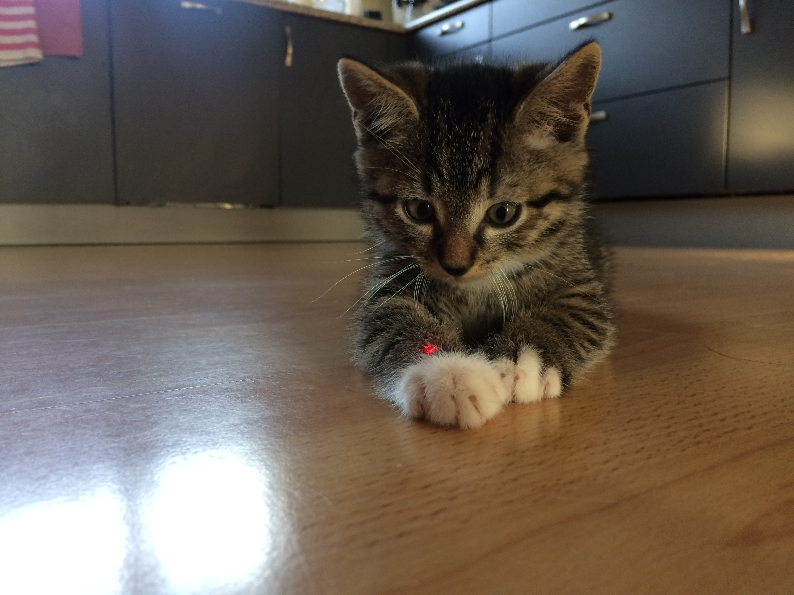
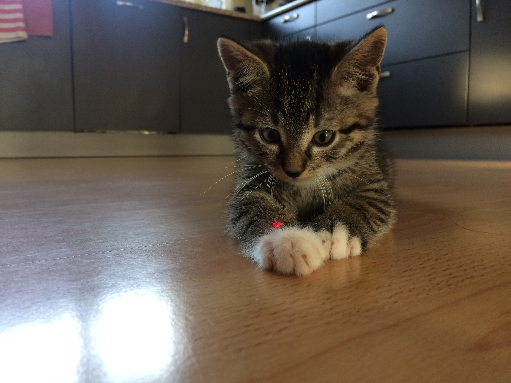
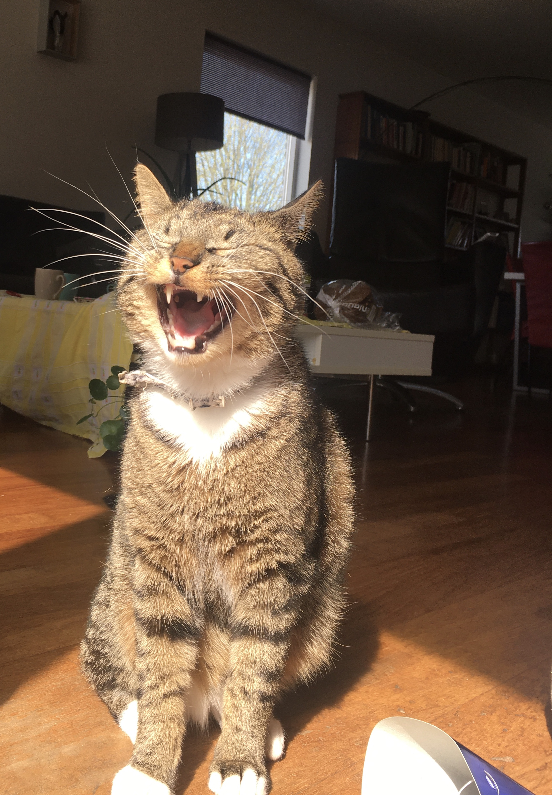

Baby Maui
Op deze foto zie je Maui toen hij nog een kitten was. Maui was een van de weinige over uit het nestje. Toen we bij hem gingen kijken merkte ik en mijn zusje al gelijk dat we een goede klik hadden met hem.

Op deze foto zie je Maui toen hij nog een kitten was. Maui was een van de weinige over uit het nestje. Toen we bij hem gingen kijken merkte ik en mijn zusje al gelijk dat we een goede klik hadden met hem.
Maui houd er heel erg van om te slapen. Het maakt niet uit wat er gebeurd, Maui slaapt er (bijna) altijd doorheen. Ook maakt het voor Maui niet uit waar hij slaapt. Maui kan slapen in een mandje, kartonnen doos, op de grond, in een plantenbak etc.

Maui heeft ook hobby's. Hij houd van heel veel dingen, namelijk: spelen met Snoes, slapen, op schoot liggen, Snoes pesten en heel veel selfies maken. Onderaan de pagina komen een paar van de beste "selfies" van Maui.
